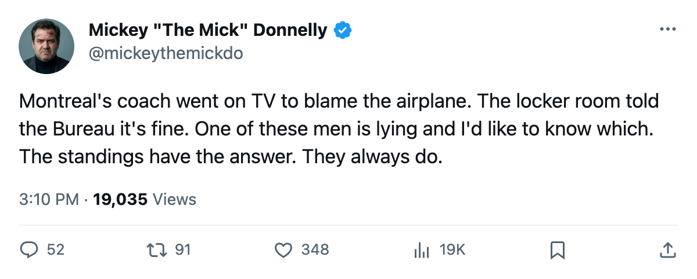
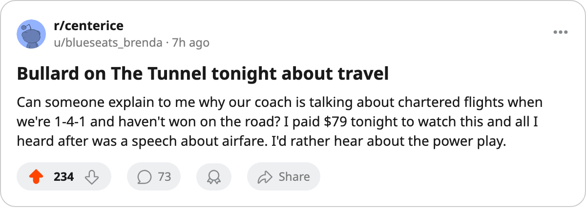

THE ROOM ISN'T BROKEN. YOU ARE. MONTREAL'S COACH WANTS TO TALK ABOUT AIRFARE.
Stefaan Bullard told The Tunnel that travel is his next priority. The Morale Scale says 90.6. The standings say 1-4-1.
 Mickey "The Mick" DonnellyColumnist, ex-goalie · The Penalty Box
Mickey "The Mick" DonnellyColumnist, ex-goalie · The Penalty Box
 Montreal Canadiens are 1-4-1 with 3 points through 6 games and a 4-game losing streak. Their coach, Stefaan Bullard, went on The Tunnel this week and told Marcus Bell that travel is next.
Montreal Canadiens are 1-4-1 with 3 points through 6 games and a 4-game losing streak. Their coach, Stefaan Bullard, went on The Tunnel this week and told Marcus Bell that travel is next.
"Travel is next. It's next because we spend half the year on a plane, and right now we're taking that penalty every road trip. Every single one. I know what it costs us. I know exactly what it costs us. And I'm telling you, it's next."
Here's what the travel costs: Montreal Canadiens went 0-2 on the road before the losing streak even started. Their away record is a goose egg. Fine. Plenty of teams have bad road records in October. What doesn't add up is where Bullard thinks the problem lives.
The Morale Scale is not a thermometer for the coach's excuses
Montreal Canadiens sit at 90.6 on the Bureau's Morale Scale. Twelfth in a 30-club league. Not broken. Not close to broken. Nobody in that building told the Bureau they hate coming to work. Bullard built a workout room first because he said he "needed it first," and he told The Tunnel that travel is next because he "knows exactly what it costs."
He doesn't need to tell the Bureau. He needs to win a hockey game.
Mike Komisarek86 sits 86 overall on the Bureau's Book, up 10 on the Development Index at 23 years old. He's the reason this club might get better. He is not the reason they're losing right now. He's scoring 4 points in 6 games from the blue line while his team gives up 16 goals in 6 games. The kid is doing his job. The bench is doing something else.
$18.30M a point: what Montreal buys with that payroll
The Montreal Canadiens payroll reads $54.89M. The return is $18.30M per point, second-worst in the league behind only Ottawa. The Arena seats 16,538 at $79 a ticket, and the fans showed up for a 1-4-1 team. That is loyalty. That is not applause for a coach who deflects to the airline.
| Club | Payroll | Points | Per point |
|---|---|---|---|
 Ottawa Senators Ottawa Senators | $58.72M | 2 | $29.36M |
| Montreal Canadiens | $54.89M | 3 | $18.30M |
 Washington Capitals Washington Capitals | $56.89M | 4 | $14.22M |
Montreal tonight plays at Philadelphia, a team that beat them 3-1 earlier this season. The Flyers are 4-2-0. Montreal is 1-4-1 with 0 road wins. Bullard will talk about travel again if they lose. The plane is a 12-hour window between games. The problem is not the plane. The problem sits behind the bench and tells reporters about itineraries.

